Kalabrien ist nicht die Toskana.
Casa Joppolo: zwei Wohnungen und ein altes Dorfhaus hoch über dem Tyrrhenischen Meer, an der Costa degli Dei. Für Auszeiten von ein paar Wochen bis zu ein paar Monaten. In der Anfangszeit vor allem für Freunde.
- Bergrücken, dahinter der Stromboli
- Liparische Inseln: Vulcano, Lipari, Salina, Panarea, Basiluzzo
- Sizilianische Berge, dahinter der Ätna (110 km, bei klarer Sicht)
- Straße von Messina, nachts ein rotes Leuchtfeuer
- Aspromonte, bis 2.000 m
- Containerhafen Gioia Tauro
- Sandstrand von Nicotera Marina
- Zum Bahnhof
- 12–15 Minuten zu Fuß bergab, 15 bis 20 bergauf. Hundert Höhenmeter.
- Das Loft
- 50 m², zwei Zimmer, möbliert, Schreibtisch mit Meerblick.
- Supermarkt
- 300 Meter, mit Frischetheke.
- Flughäfen
- Lamezia Terme und Reggio Calabria. Joppolo liegt etwa in der Mitte.
- Von Berlin
- Rund 1.600 Kilometer nach Süden.
- Internet
- 5G über das eigene Handy. WLAN gibt es nicht.
01Der Ort
Ein etwas vergessener Ort an der Götterküste.
Joppolo liegt in der Mitte der Südwestküste der Costa degli Dei, der Götterküste, in einer wilden, grünen Landschaft, in der alles zu gedeihen scheint. Perfekt zur Sonne ausgerichtet, mit Blick auf die Stiefelspitze, Sizilien und die Liparischen Inseln.
Wegen des Felsbrockenstrandes ist der Ort deutlich weniger touristisch als die Nordwestküste zwischen Capo Vaticano und Pizzo mit ihren Sandbuchten. Dafür gibt es hier noch eine starke lokale Gemeinschaft: Auf der Straße grüßt man sich, ein „Ciao“ oder „Salve“ und ein paar Worte zum Wetter gehören dazu. Dazu Norditaliener mit Ferienhäusern, Argentinier mit italienischen Wurzeln, die zurückkommen, und die Anfänge einer kleinen deutschen Community.
Und ja, Kalabrien ist nicht die Toskana. In und um Joppolo gehören Bauruinen, Müllablagerungen und marode Infrastruktur zum Bild. Dazwischen spektakuläre Landschaft, verwunschene Orte, tolle Strände und jede Menge Lost Places. Wer Perfektion sucht, ist hier falsch. Wer Potenzial sieht, richtig.

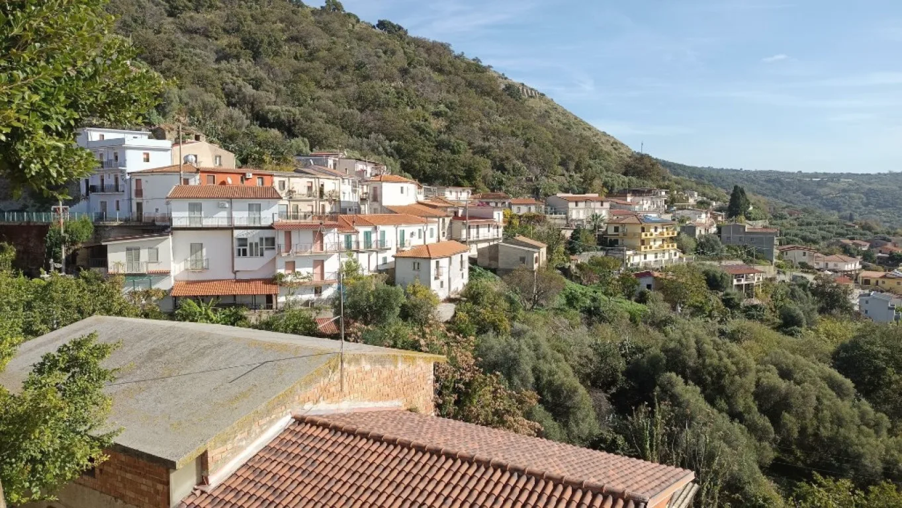
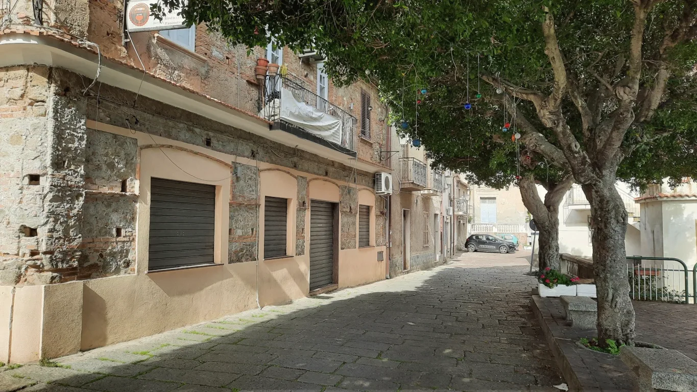
02Das Haus
Zwei Ebenen, ein Dorfhaus, eine Dachterrasse.
Das Stadthaus, 2024 gekauft, hat zwei Ebenen, die getrennt genutzt werden. Nebenan steht seit 2025 das alte Dorfhaus. Drei Namen, drei Charaktere.
-
Obere WohnungBellevue
Liegt an der Via Roma und heißt so wegen des Panoramas: Golf von Gioia Tauro, Sizilien, die Liparischen Inseln. Oben drauf die Dachterrasse mit provisorischer Pergola, Sonnensegel und Hängematte. Die Möblierung dort ist noch nicht abgeschlossen, Ideen willkommen.
- Adresse
- Via Roma 3
- Dazu
- Dachterrasse, Panorama
-
Untere WohnungLoft
Die untere Ebene an der ehemaligen Via Borgo, getauft wegen der hohen Räume und der großen Wohnküche. Auch hier Meerblick. Das Loft wird ab und zu für längere Auszeiten und Workation vermietet, mehr dazu unten.
- Adresse
- Traversa di Largo Lanzari 11
- Größe
- 50 m², zwei Zimmer
-
DorfhausRustico
Das etwas verfallene alte Haus nebenan, 2025 dazugekauft. Wegen seiner Ursprünglichkeit „Rustico“ getauft. Dient als Gästezimmer, Werkstatt und Lager, und für künftige Renovierungsträume.
- Adresse
- Via Roma 5
- Zustand
- Verfallen, mit Potenzial
- Dachterrasse mit PanoramaPergola, Sonnensegel, Hängematte, große Granitkiesel vom Strand gegen den Wind.
- Deckenventilatoren in allen AufenthaltsräumenStufe 5 ist die langsamste.
- Kleine GaszentralheizungNicht perfekt. Im Winter warme Kleidung einpacken, an feuchten Tagen fühlt es sich kälter an, als das Thermometer sagt.
- Komplette AusstattungBettwäsche, Handtücher, Decken, Badeschuhe, Schnorchel, Strandschirm, Regenschirme, Yogamatten, Einkaufstaschen.
- Waschmaschine und Spülmaschine
- Wassertank auf dem DachFür die Tage, an denen das Leitungswasser in Joppolo ausfällt.
- Quellwasser oben am PlatzDer abendliche Gang mit den Flaschen hat Kultfaktor.
- WLAN5G und Hotspot übers Handy funktionieren wunderbar, auch für Videokonferenzen. Bei großem Datenhunger: italienische SIM-Karte.
- KlimaanlageEin Splitgerät pro Etage ist in Planung. Bis dahin: Ventilatoren, Rollläden, Fensterläden.
- ReinigungsserviceMan hinterlässt die Wohnung so, wie man sie selbst gern vorfinden will.
- Mehr als 3 Kilowatt StromItalienische Anschlussleistung. Nicht alle Stromfresser gleichzeitig.
- FernseherEine kleine Bluetooth-Box gibt es, ein Beamer ist geplant.
- Sandstrand vor der TürFelsbrocken und Badeschuhe. Die Sandstrände liegen in Nicotera Marina und am Capo Vaticano.
- Ein Weg für RollkofferHundert Höhenmeter vom Bahnhof. Rucksack.
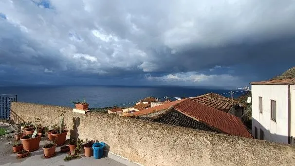
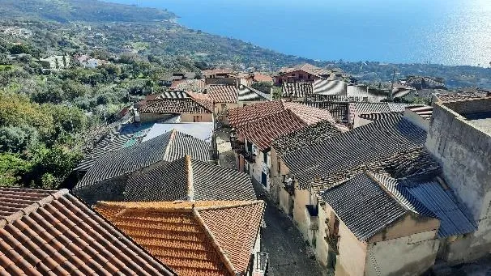
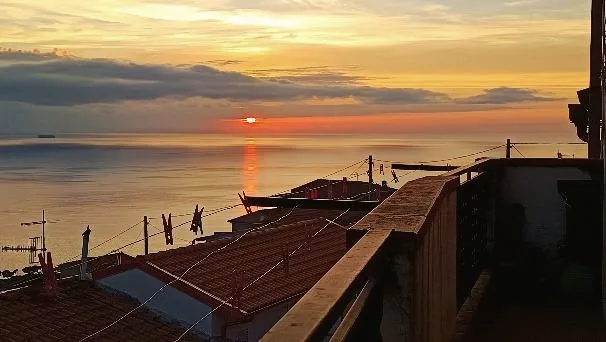
03Das Loft
Auszeit mit Blick aufs Mittelmeer.
Das Loft ist die untere Wohnung: 50 Quadratmeter, zwei Zimmer, hohe Räume, eine große Wohnküche mit Kochinsel und ein Schreibtisch am Fenster, hinter dem das Meer anfängt. Gedacht für Aufenthalte von etwa drei Monaten: Workation, Sprachaufenthalt, ein Projekt, eine Auszeit.
Möbliert und komplett eingerichtet, mit Boxspringbett, Deckenventilatoren, Zentralheizung, Waschmaschine und einem Bad mit Dusche und Wanne. Das zweite Zimmer ist Arbeitszimmer, Gästezimmer oder beides.
Verfügbarkeit, Miete und Nebenkosten stehen im aktuellen Inserat. Dort geht auch die Anfrage am einfachsten: Zum Inserat auf WG-gesucht.
- Wohnfläche
- 50 m²
- Zimmer
- Zwei, plus Wohnküche
- Dauer
- Etwa drei Monate
- Ausstattung
- Möbliert, Küche komplett
- Wärme und Kühle
- Gaszentralheizung, Deckenventilatoren
- Internet
- 5G-Hotspot übers Handy
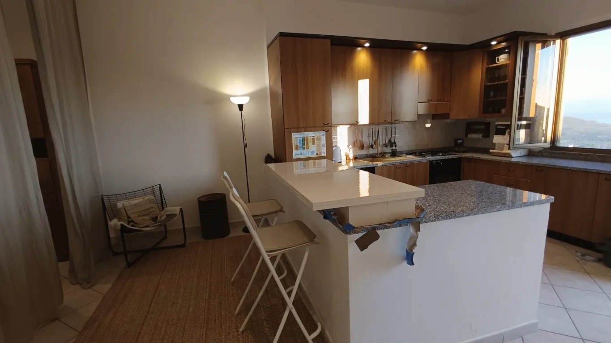

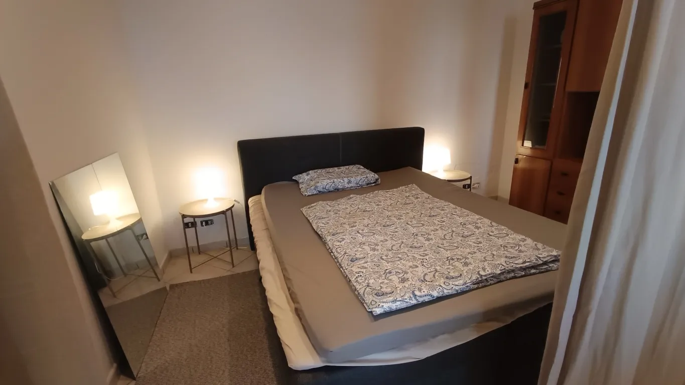
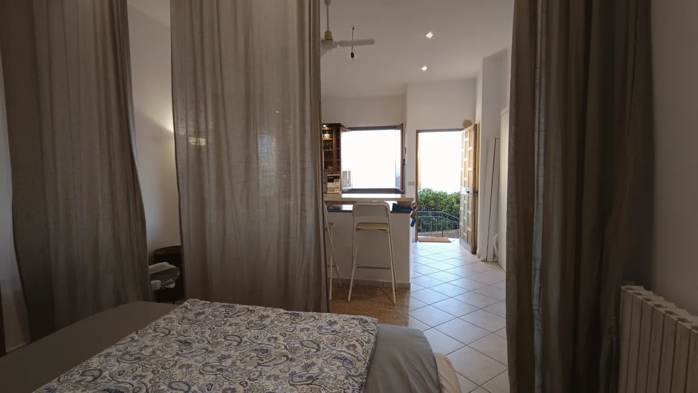
04Joppolo for Friends
In der Anfangszeit: für Freunde.
Das Haus ist in erster Linie für die Vermietung bei mehrmonatigen Aufenthalten und für Sharing-Modelle gedacht. In der Anfangszeit steht es aber vor allem Freunden offen, um das Haus und den Ort zu etablieren.
„Joppolo for Friends“ heißt das. Nach einem Jahr waren 33 Leute da, 13 davon mehrfach. Zwei haben inzwischen selbst ein Haus mit Meerblick im Borgo gekauft. Wer eingeladen ist, bringt sich ein, wenn er mag: beim Kochen, Einkaufen, Handwerken, Blumengießen, Müllaufsammeln. Vor allem aber soll er den Urlaub genießen.
Einen Reinigungsservice gibt es nicht, dafür eine Checkliste und die Bitte, die Wohnung so zu hinterlassen, wie man sie selbst gern vorfinden will. Wer dazugehört, kennt den Kalender. Wer nicht, fragt Tim.
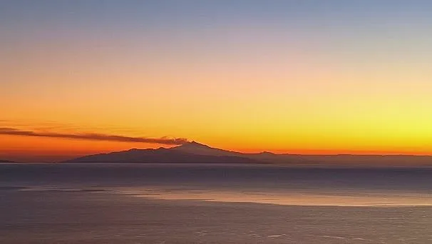
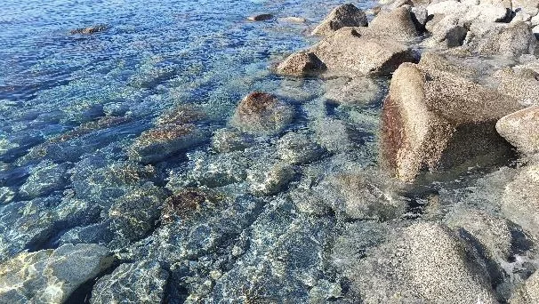
05Anreise
Ohne Auto, mit Kondition.
Joppolo liegt etwa in der Mitte zwischen den Flughäfen Lamezia Terme und Reggio Calabria. Beide sind Endpunkte der Bahnlinie, die an der Küste entlang in Joppolo hält. Ein Auto braucht man nicht, dafür gute Beine.
-
Fliegen. Ryanair fliegt seit 2024 die drei kalabrischen Flughäfen Lamezia Terme, Reggio Calabria und Crotone an, oft zu sehr günstigen Preisen. Von Lamezia und Reggio fahren Busse zum jeweiligen Hauptbahnhof.
-
Bahn. Der Regionalzug hält an der Stazione di Joppolo: im Winter sieben bis neun Züge am Tag, im Sommer zwölf, samstags etwas weniger, sonntags sehr wenige. Fahrpläne und Tickets wie zu Hause im DB Navigator oder bei Trenitalia.
-
Zu Fuß hoch. Vom Bahnhof zum Haus sind es 15 bis 20 Minuten bergauf, zurück 12 bis 15. Hundert Höhenmeter auf einem kleinen Weg, nicht rollkoffergeeignet. Der schönste Teil der Anreise.
-
Oder mit dem Zug von Deutschland. Nachtzug von München nach Rom oder Eurocity von München nach Bologna, dann mit Frecciarossa oder Italo in den Süden und in Rosarno, 17 Kilometer von Joppolo, oder in Lamezia Terme in den Regionalzug. Italo-Züge gibt es nur auf der Italo-Website.
-
Mit dem Auto. Durchgehend Autobahn ohne Fähre, ab Salerno mautfrei. Abfahrt Rosarno, dann 20 Minuten Küstenstraße. Nötig ist das Auto nicht, nur schön fürs Hinterland. Mietwagen gibt es auch in Ricadi, Santa Domenica und Tropea.
06Umgebung
Strände, Lost Places und bei klarer Sicht der Ätna.
Vom Haus aus liegen einem das Villenviertel von Joppolo und das glitzernde Tyrrhenische Meer zu Füßen. Im Osten der weiße Streifen des Sandstrands von Nicotera Marina, dann die nachts hell erleuchteten Kräne des Containerhafens von Gioia Tauro und das bis zu 2.000 Meter hohe Aspromonte. Durch die Straße von Messina kann man direkt hindurchschauen, nachts blinkt dort ein rotes Leuchtfeuer. Im Westen die Liparischen Inseln, und bei sehr guter Sicht hinter den sizilianischen Bergen der 110 Kilometer entfernte Ätna. Nur den Stromboli muss man sich unten am Lungomare anschauen, vom Haus aus versteckt er sich hinter dem Bergrücken.
Zu Fuß. Der ausgeschilderte Wanderweg Mare e Monti führt fast am Haus vorbei, vom Meer bis zur Wallfahrtskirche oberhalb von Caroniti. Spektakulär ist der Höhenweg von Caroniti zum Aussichtspunkt Richtung Capo Vaticano, oder die Wanderung am Meer entlang nach Nicotera Marina. Abenteuerlich und wildromantisch: die Schlucht östlich von Calafoniti.
Ins Wasser. In Joppolo badet man an den Enden des Lungomare: in der kleinen Felsbucht Spelonga im Westen oder bei den wilden Felsen unterhalb des Torre im Osten, Badeschuhe empfohlen. Der versteckte kleine Sandstrand Tirijiu in einer Bucht vor Coccorino ist ein Geheimtipp. Rund um das Capo Vaticano liegen die großen Traumstrände, Grotticelle außerhalb der Saison menschenleer. Nicotera Marina hat einen kilometerlangen Strand mit karibischem Flair.
Mit der Bahn. Tropea, 2023 zum schönsten Dorf Italiens gekürt. Capo Vaticano, Pizzo, Nicotera. Scilla, bekannt aus der Odyssee. Reggio Calabria mit dem Lungomare unter riesigen Ficusbäumen. Messina mit der Fähre ab Villa San Giovanni. Alles ohne Auto, mit etwas Zeit und Flexibilität, am besten unter der Woche.
Im Ort. Supermarkt mit Frischetheke 300 Meter unterhalb, zwei Tabacchi, Apotheke, Post, Friseur und Rathaus, alles zu Fuß. Eine Bar neben dem Rathaus hat praktisch immer auf. Abends holt man Wasser an der Quelle oben am Platz. In der alten Polizeiwache gibt es gelegentlich Konzerte mit Umtrunk, und die Gottesdienste der Kirche über dem Haus hört man bis in die Hängematte.

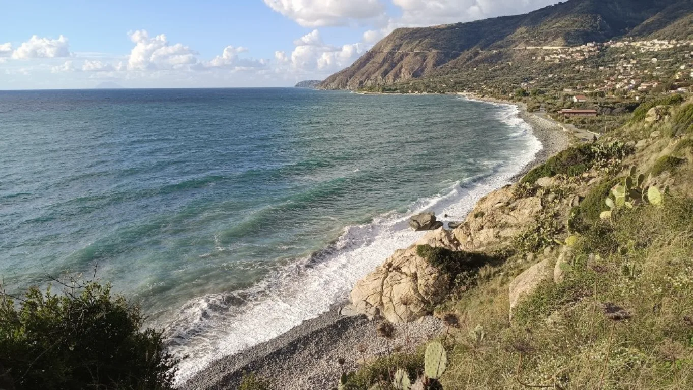
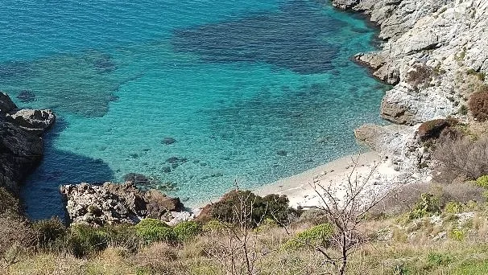
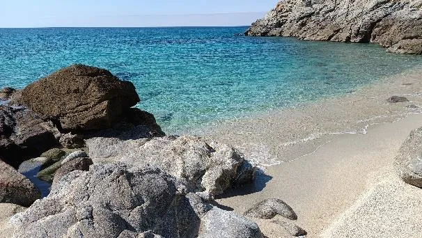
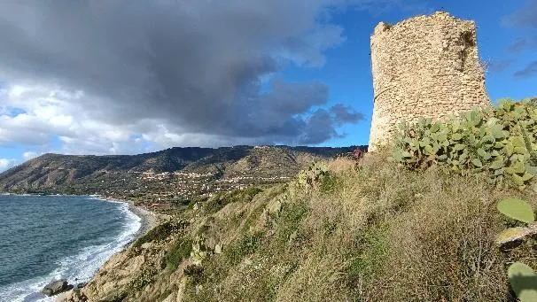
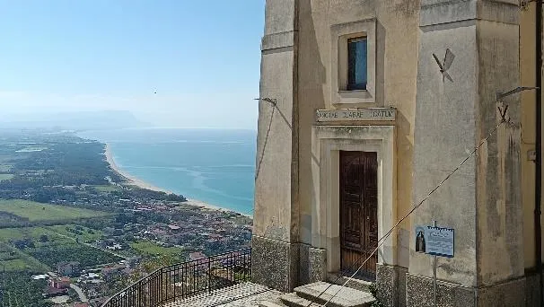
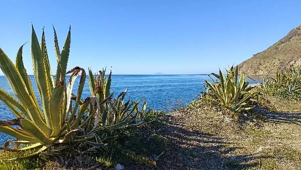
07Kontakt
Neugierig? Dann schreib Tim.
EigentümerTim Lehmann
tim.c.lehmann@gmail.com
Fürs Loft am einfachsten über das Inserat auf WG-gesucht. Freunde wissen, wie sie Tim erreichen.